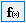

グラフ（レイアウト）にOLEオブジェクトを挿入する
Graph-InsertOLE-Obj
数式を挿入
Origin 2023bから、OriginではSVGベースのLaTeX数式ツールを使用できます。この新機能の数式を挿入ツールは、手動でのライブラリやソフトウェアのインストールは不要です。Originに組み込まれているMathJax JSライブラリを使用しています（ファイルは<Origin ProgramData folder>\JS\MathJax\にあります）。一方、従来の数式を挿入ツールでは、Mathtypeまたは Microsoftの数式エディタがインストールされている必要があり、アドオンの LaTeXアプリを使用するには、MiKTexのインストールも必要です。
- グラフまたはレイアウトウィンドウがアクティブな状態で
- (a) プロット操作・オブジェクト作成ツールバーの数式を挿入をクリックまたは
- (b)挿入: LaTeX数式を選択 または
- (c) グラフページ上で右クリックしてLaTeXの式を挿入メニューを選択または
- (d) テキストとLaTeX式が混在する場合は、テキストオブジェクトをグラフに追加します。ダブルクリックしてインプレース編集モードにします。右クリックして、メニューから挿入: LaTeX数式を選択します。
LaTeX数式エディタが開いたら、上部の編集ボックスで数式を入力します。下部パネルでレンダリングされた数式をプレビューできます。
ヒント
- F(x) ボタンをクリックしてOriginのフィット関数のリスト（ユーザ定義関数を含む）を開きます。関数を選択して上部パネルで編集できます。
- 方程式オブジェクトを回転するには、(a) Latex数式エディタで角度を選択または入力します。または (b) 数式オブジェクトを2回 (ダブルクリックではなく) クリックして回転モードにし、4つのアンカーのいずれかを自由にドラッグします。
- LaTeXオブジェクト上でダブルクリックすれば、LaTeX数式エディタを開いて編集操作が可能です。
- プレーンテキスト (LaTeXマークアップ) をコピーし、グラフウィンドウ内の空白領域を右クリックしてLaTeX貼り付けを選択すると、テキストがLaTeXオブジェクトとしてレンダリングされて貼り付けられます。

- 軸のタイトル、凡例、または任意のテキストオブジェクトにLaTeX 式を挿入することもできます。
- テキストオブジェクトでダブルクリックすると、テキスト入力モードになります。
- 右クリックして挿入: LaTeX数式メニューを選択するか、Ctrl + L を押してLaTeX数式エディタを開きます。
Note: ワークシートの列ラベル行 (ロングネーム、単位、コメントなど) に挿入されたLaTeX数式は、軸のタイトルや凡例で自動でレンダリングされます。
- MathJaxは多くのサードパーティ製拡張機能をサポートしています。これらの拡張ファイルをインストールするには、ツール: Latex 拡張機能を選択します。詳細は次のセクションを参照してください。
 | 数式の挿入にMathTypeを使用したい場合
- オブジェクトを挿入ボタン
 を使用してください。詳細は下のセクション をご参照下さい。または、 を使用してください。詳細は下のセクション をご参照下さい。または、
- システム変数@MKX = 1 および @IEE = -1 を設定して従来の動作に戻すことができます。
|
| Originでの数式挿入の方法についてはこのFAQで詳細を確認してください。
|
LaTex拡張機能
- サードパーティー製の拡張機能をインストールするには
- ツール: LaTeX拡張機能を選択してダイアログを開きます。
- インストールボタンをクリックします。MathJax拡張機能をインストールダイアログが開きます。MathJax拡張機能ファイルの右にある... ボタンをクリックします。ダイアログが開いたら、拡張子.jsのファイルを選択し、OKをクリックしてMathJax拡張機能ファイルに追加します。
- OKボタンをクリックして、LaTeX拡張機能ダイアログに戻ります。
- 閉じるボタンをクリックします。
- LaTeX数式エディタで LaTeX数式の入力をお試しください。
- サードパーティー製の拡張機能をアンインストールするには
- 上記のリストボックスで削除するものを選択し、アンインストールボタンをクリックします。
| MathJax 拡張機能でサポートされていない複雑な構文/記号が存在する場合があります。たとえば、chemfigMiKTex拡張機能でサポートされている化学図などです。そんなニーズがありましたら、ぜひお試しください
または
|
他のOLEオブジェクトを挿入
Npte: これらのプロット操作・オブジェクト作成ツールバーボタンを使用するには、サポートアプリケーション(MS Word など) がPCにインストールされている必要があります。